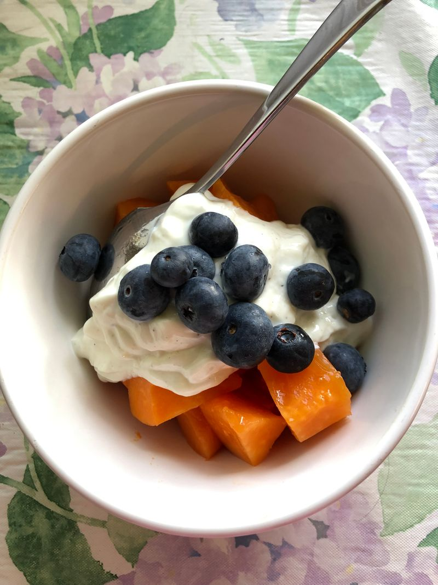
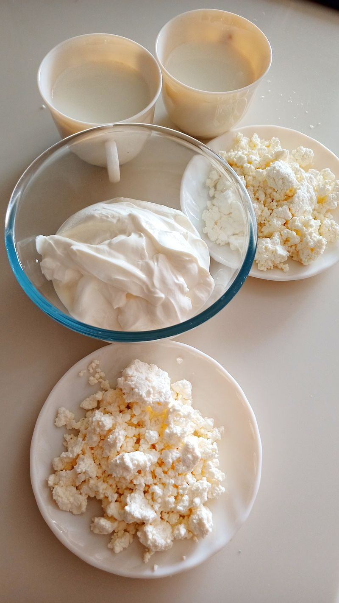
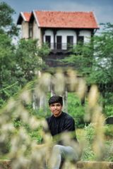

Behind the Milk
See Where Your Milk Comes From.
Take a quiet walk through our pastures — the same fields your milk starts in, every single morning.
Every morning begins the same way at Gokul Dairy Farm — healthy cows, open pasture, and milk that travels from udder to home the same day. Three generations of care, none of it rushed.

For over two decades, Gokul Dairy Farm has followed one simple principle: happy cows make honest milk. Our herd grazes freely across open pasture, drinks clean water, and is looked after by farmers who know every animal by name. Nothing is rushed, nothing is masked — just fresh, wholesome dairy, the way it was always meant to be.


Everything we make begins with the same glass of fresh milk — nothing added, nothing hurried.

Chilled within hours of milking — pure, creamy, and unadulterated.

Set the traditional way — thick, cool, and naturally tangy.

Soft, fresh-pressed cottage cheese, made in small batches daily.

Slow-simmered the traditional way — golden, rich, and aromatic.
Our herd grazes on open pasture and eats a natural diet — no shortcuts, no additives.
Clean equipment and gentle technique, followed the same way at every milking.
Milked in the morning, chilled by noon and on your table the same evening.
Every batch is checked for purity and freshness before it ever leaves the farm.
Our farmers know every cow in the herd — by name and by nature.
that give back to the land as much as they take from it.
Take a quiet walk through our pastures — the same fields your milk starts in, every single morning.
The taste of real milk again — my children can actually tell the difference from what we had before.
We've switched entirely to Gokul for our dairy. The curd genuinely tastes like my grandmother used to make.
Fresh, honest dairy delivered with real care, every single morning without fail. It's rare to find that anymore.
You can genuinely taste that the cows are well cared for. Worth every visit to the farm store.


Discover fresh, quality dairy products from Gokul Dairy Farm.